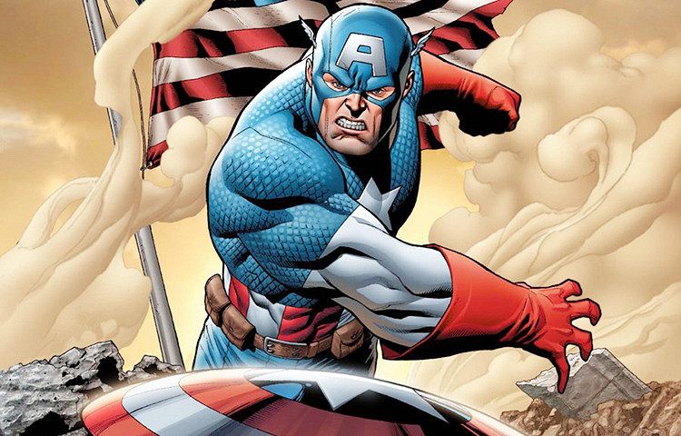
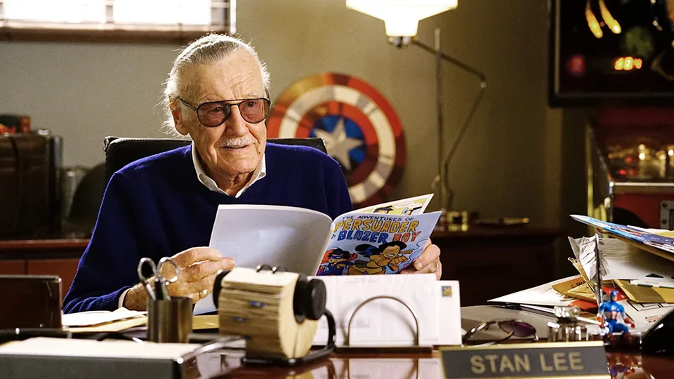
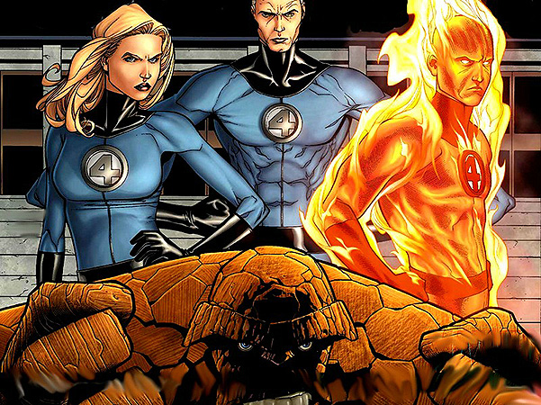
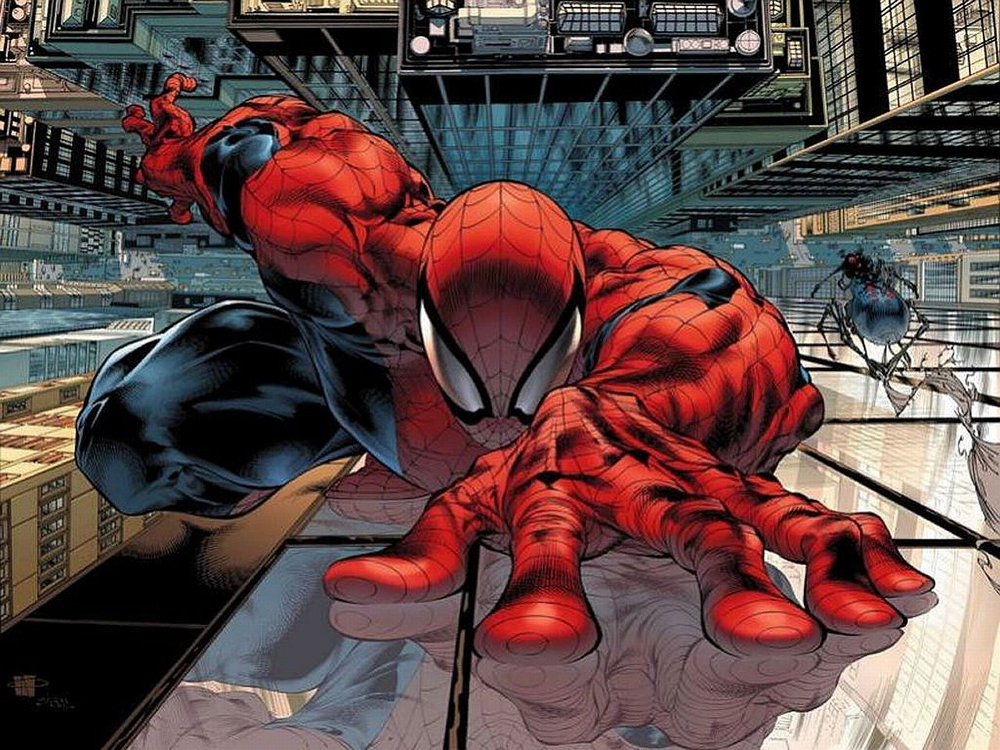
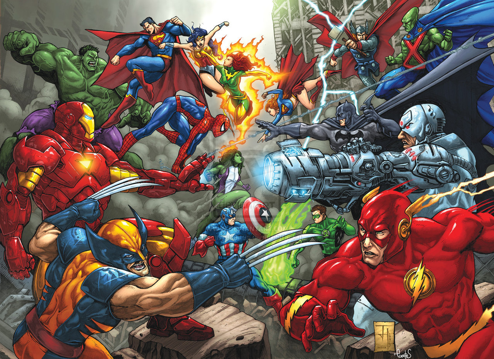

Компания Marvel Comics создаёт одни из самых известных комиксов в мире. Все знают Человека-Паука, Людей-Х, Капитана Америку, Железного человека, а теперь ещё и неутомимого юмориста Дэдпула. Волшебная вселенная Marvel регулярно радует зрителя фильмами про супергероев. Но путь к успеху компании не всегда был гладким: он полон взлётов и падений. Конкуренция – двигатель любого развития, и история Marvel наглядно доказывает это. На сегодняшний день, наряду с DC Comics, это одно из крупнейших издательств, олицетворяющих современную комикс-культуру.
Всё начиналось с бульварных журналов с детективами, приключениями и фантастикой, которые в далёком 1939 году выпускал Мартин Гудмен. В то же самое время прогремел на весь мир комикс про Супермена, созданный, DC Comics. Его бешеная популярность не прошла мимо Гудмена, и он решил пойти по стопам конкурентов, создав аналогичный продукт. Мартин создал компанию Timely Comics, пригласив главным редактором Джо Саймона и авторов Карла Бургоса и Билла Эверетта. Они и создали первый комикс – историю противостояния супергероев-мутантов Человека-Факела и антигероя Немора-Подводника. С прилавков они разлетались с такой скоростью, что компании не хватало средств, чтобы допечатывать экземпляры.
В 1939 году началась Вторая Мировая война. Фигура Гитлера, его солдат и примкнувших к ним японцев и итальянцев вырисовывались как образы классических злодеев – оставалось только найти положительного героя, способного их победить. Как ответ на угрозы агрессоров в адрес США появился Капитан Америка. Этот персонаж был тщательно продуман и глубоко патриотичен. Это был не просто супергерой, а идеология, способная конкурировать по принципу воздействия с советской и нацистской пропагандой. Капитан Америка призван был поддерживать боевой дух американцев, он представлялся как обычный человек, ставящий защиту Родины выше собственных интересов. Естественно, он стал самым популярным героем того времени. Комиксы большими партиями отправлялись на фронт.
В этот период в команде появился сценарист Стэнли Либер, семнадцатилетний сын двоюродного брата жены Гудмана. Позже он войдёт в историю под именем Стэн Ли и будет известен, как человек, наряду с художником Джеком Керби, создавшим большую часть каноничных героев Marvel в частности и комиксов вообще. Поначалу молодой парень выполнял незначительную работу, не относящуюся к творческому процессу, но его способности и желание трудиться заметили редакторы комиксов и нагрузили большим объемом работы. Именно тогда на разворотах комиксов стали появляться подписи Либера.
В 1944 году Капитан Америка впервые появился на телеэкранах. Правда, он имел мало общего с созданным в военное время патриотичным персонажем – только костюм. Но он был всё ещё на волне известности, поэтому повышенный интерес к фильму был обеспечен.
Однако когда победа над фашистской Германией была одержана, произошёл резкий спад популярности героя. Люди устали от военных действий, им хотелось жить в мирном государстве, и патриотичный герой вместе с рисованными злодеями перестал их вдохновлять.
Спрос на комиксы очень сильно упал, но Гудмен старался держать компанию на плаву. Он переименовал её в Atlas Comics и начал создавать рисованные приключения, фантастику, романтические истории, ориентированные на впечатлительную молодёжь. О Капитане Америка, Человеке-Факеле и Неморе пришлось на время забыть.
В конце пятидесятых годов, на волне популярности научно-фантастических фильмов, Мартин Гудмен начинает выпускать такие серии как «Удивительные миры», «Мир фэнтези», «Тревожные истории». Особую популярность им обрести не удалось, но они помогли набить руку молодым художникам и писателям, которые впоследствии приведут компанию к триумфу. В то же время Гудмен создаёт серию комиксов специально для девушек: «Кэти», «Линда Картер, медсестра-студентка».
К началу 1960 года поколение тех, кто ещё помнит войну, выросло. Им на смену пришла мирная молодёжь, студенты. Это было идеальное время для возрождения супергероев. В 1961 году компания, теперь называвшаяся Marve lComics, выпускает на рынок The Fantastic Four №1 – первый комикс о Фантастической Четверке. У супергероев, наделенных суперспособностями и бессмертием, появилась принципиально новая концепция: они стали человечными. Идея заключалась в том, что они вели себя как обычные люди – ссорились, мирились, выстраивали отношения. И поначалу даже не носили костюмы. Читатель чувствовал себя ближе к этим персонажам, видел в них себя, сильнее сопереживал. Это помогло Marvel Comics выбраться из затянувшегося кризиса.
В шестидесятые годы тематика комиксов начинает обретать научно-фантастическую направленность. Поэтому появляющиеся в последующие годы такие супергерои, как Халк, Люди Икс, Человек-Паук появлялись посредством радиации, экспериментов с химическими реактивами, генной инженерией, и стали называться мутантами.
В 1962 году появляется Человек-Паук – скромный, забитый парень Питер Паркер, по роковой случайности получивший гены паука. Этот образ откликается в юном поколении, многие видят в этом тихоне, ставшем супергероем, себя, и персонаж обретает бешеную популярность и становится одним из символов молодёжной культуры. Образ был настолько узнаваем и успешен, что на него обратил внимание Департамент Здравоохранения. От него поступило предложение использовать полюбившегося супергероя в рамках социальной рекламы, посвященной пропаганде отказа от наркотиков. Гудман ответил согласием. Но в индустрии комиксов существовал свой кодекс, своего рода цензура, которая запрещала использовать своих персонажей в сценах насилия и общественных пороков. Marvel поступил по-своему, и этот ролик обрёл такую популярность, что в кодекс пришлось внести поправки.
К концу шестидесятых годов компании DC Comics и Marvel находятся в состоянии постоянного соперничества. В конце семидесятых один из главных иллюстраторов Джек Керби переходит к конкурентам. Для Marvel Comics это становится настоящим потрясением, выбивает корпорацию из колеи и приводит к банкротству.
В 1986 году компанию Marvel перекупает корпорация New World Entertainment, а еще через три года — Mac Andrews and Forbes. В это же время на экраны начинают выходить первые фильмы по комиксам – «Капитан Америка», «Халк», «Человек Паук» и «Фантастическая четверка».
В начале девяностых ряд талантливых художников: Джим Ли, Эрик Ларсен и Джим Валентино тоже покидают компанию и основывают независимое издательство Image Comics. Это снова приводит к спаду продаж. Неожиданно вечные конкуренты DC Comics и Marvel объединяются и выпускают ряд комиксов, в которых их герои сражаются между собой.
Начало нового тысячелетия положило конец неудачам Marvel и вывело их на передовую позицию относительно DC Comics. В 2001 году компания перестала подчиняться цензуре Comics Code, что развязало им руки в отношении собственного уникального контента и сценариев. Комиксы с самыми известными персонажами были выпущены заново, а также на экран опять вышли высокобюджетные фильмы про Людей Икс и Человека-паука.
В 2009 году компания Marvel Comics вошла в состав The Walt Disney Company.
С этого момента начали появляться фильмы-блокбастеры, которые сразу покорили миллионы зрителей, основанные на сюжетах комиксов.